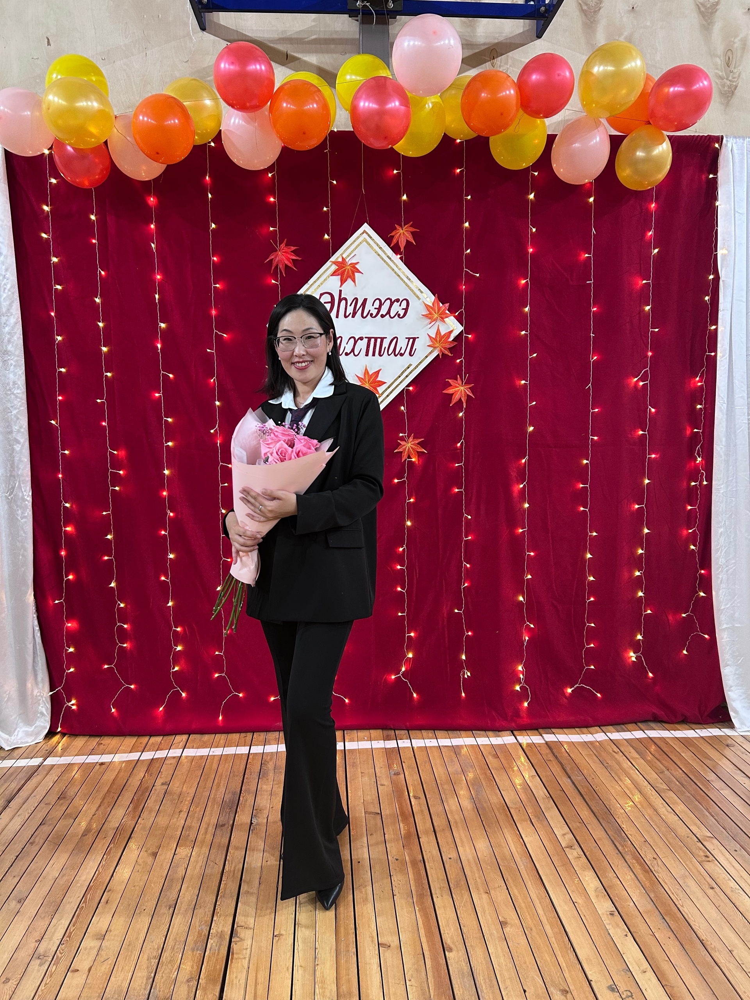

Обо мне
Я работаю учителем английского языка в селе Екюндю Вилюйского улуса (района). В педагогической деятельности для меня важны уважение, спокойная уверенность, открытость к диалогу и внимание к каждому ребенку.
Мой урок строится вокруг уважения к личности ученика, живой речи, чтения и внутренней уверенности, с которой ребенок открывает для себя мир языка.

Обо мне
Я работаю учителем английского языка в селе Екюндю Вилюйского улуса (района). В педагогической деятельности для меня важны уважение, спокойная уверенность, открытость к диалогу и внимание к каждому ребенку.
Педагогическое кредо
Язык становится живым, когда он помогает ребенку мыслить, понимать текст, формулировать собственную позицию и смело выражать себя.
Моя цель
Создавать учебную среду, в которой знания соединяются с личностным ростом, интересом к чтению и культурой общения.
Строю урок так, чтобы английский звучал как язык общения, а не только как набор правил и упражнений.
Поддерживаю внимание к тексту, умение видеть смысл, задавать вопросы и находить в чтении опору для мышления.
Важной частью урока считаю безопасную среду, где ученик не боится пробовать, говорить, ошибаться и постепенно усиливать свою уверенность.
Каждый урок должен оставлять не только знания, но и понимание собственного продвижения, маленькой победы и следующего шага.
“Language opens a door. A caring teacher helps a child walk through it with confidence.”
Сайт помогает быстро составить целостное представление обо мне как о педагоге, моем профессиональном взгляде и образовательных ориентирах.
Здесь удобно размещать разработки уроков, презентации, тексты, задания и другие материалы, полезные для учеников, родителей и коллег.
Личный сайт можно использовать как аккуратное пространство для педагогических размышлений, описания практик и обмена рабочими находками.
Визуальные материалы делают портфолио живым: они показывают атмосферу уроков, школьные мероприятия и реальную образовательную среду.
Моя педагогическая позиция